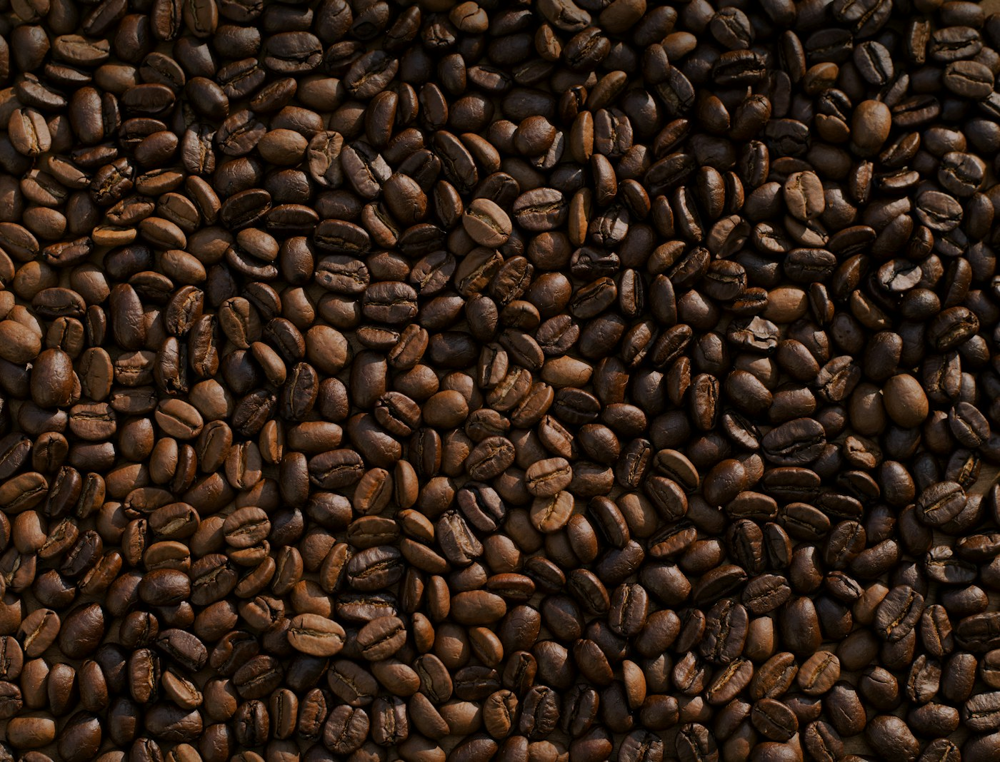
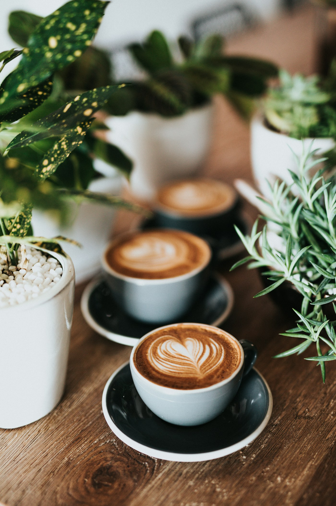

A origem
Grãos de diferentes regiões, escolhidos pela personalidade de cada lote.
CAFÉ DE ESPECIALIDADE & PEQUENAS PAUSAS
Grãos escolhidos com cuidado, pão saindo do forno e aquele tempo que é só seu. Entre. A gente passa um café.

Acreditamos no ritual: moer na hora, sentir o aroma, provar com calma. Nossa seleção apresenta diferentes regiões e formas de preparar, sem complicar o que pode ser uma boa conversa.
Descubra o que preparamos para vocêEscolha uma intensidade e descubra seu próximo café.
Corpo marcante, notas de chocolate e uma crema delicada.

Grãos de diferentes regiões, escolhidos pela personalidade de cada lote.
Moagem na hora, água na temperatura certa e atenção à extração.
Escolha sua mesa, abra um livro ou só aproveite o seu tempo.
O formulário permite experimentar o fluxo de escolha. Esta é uma demonstração: nenhum horário, visita ou aula será confirmado em um estabelecimento real.
Sim. Experimente os botões, filtros e elementos interativos. Todo o conteúdo foi criado para apresentar as possibilidades deste modelo.
Sim. Use “Quero um site assim” e conte sua ideia para a Codik. Podemos personalizar cada detalhe.
Alba Café é uma marca fictícia. Este site é um conceito demonstrativo criado pela Codik.